Cubical and Simplicial Complexes
Finite models of shape
Computational topology replaces continuous shapes with finite collections of simple pieces. Cubical complexes use vertices, edges, squares, and cubes. Simplicial complexes use vertices, edges, triangles, tetrahedra, and their higher-dimensional analogues (Kaczynski et al. 2006).
A complex is a construction kit with one consistency rule: whenever a piece is included, all pieces on its boundary must also be included. A filled pixel therefore brings along four edges and four corner vertices. This face closure rule is the organising idea of the chapter.
The cubical development is essential for the image pipeline. The simplicial sections explain how this choice connects with the more common language of triangles and tetrahedra. On a first reading, it is enough to understand cubical complexes, face closure, and filtrations; the coordinate model of geometric realisation can be revisited later.
1 Elementary cubes
Definition 1 (Elementary cube) An elementary interval is either
\[ [k,k+1]\qquad\text{or}\qquad[k,k] \]
for some \(k\in\mathbb Z\). The first is non-degenerate; the second is a single point.
An elementary cube in \(\mathbb R^n\) is a product
\[ \kappa=I_1\times\cdots\times I_n \]
of elementary intervals. Its dimension is the number of non-degenerate factors.
The product notation lists the allowed coordinate ranges independently. For example,
\[ [2,3]\times[5,5] =\{(x,5):2\leq x\leq3\} \]
is a horizontal edge: the first coordinate varies and the second is fixed. By contrast, \([2,3]\times[5,6]\) is a square because both coordinates vary.
Thus:
- a \(0\)-cube is a vertex;
- a \(1\)-cube is an edge;
- a \(2\)-cube is a square; and
- a \(3\)-cube is an ordinary solid cube.
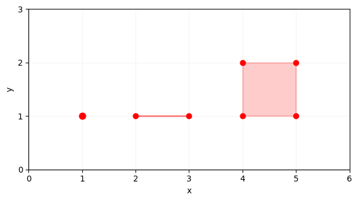
2 Faces and facets
A cube \(\gamma\) is a face of \(\kappa\), written \(\gamma\preceq\kappa\), if \(\gamma\subseteq\kappa\). A face of codimension one is a facet.
Conversely, \(\kappa\) is a coface of \(\gamma\). The codimension of \(\gamma\preceq\kappa\) is
\[ \operatorname{codim}_\kappa\gamma =\dim\kappa-\dim\gamma. \]
This language becomes important when assigning values to cells: a pixel is a coface of each of its four edges and four vertices.
For the unit square
\[ \kappa=[0,1]\times[0,1], \]
the four facets are obtained by fixing one coordinate to \(0\) or \(1\):
\[ \begin{aligned} \delta_1^-\kappa&=[0]\times[0,1],& \delta_1^+\kappa&=[1]\times[0,1],\\ \delta_2^-\kappa&=[0,1]\times[0],& \delta_2^+\kappa&=[0,1]\times[1]. \end{aligned} \]
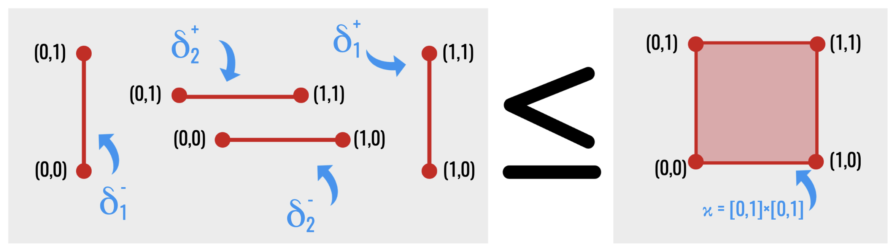
Here the superscripts (+) and (-) identify the upper and lower endpoint of a coordinate interval; they are not yet coefficients in a chain. The next drawing suppresses that bookkeeping and displays the complete face inventory.
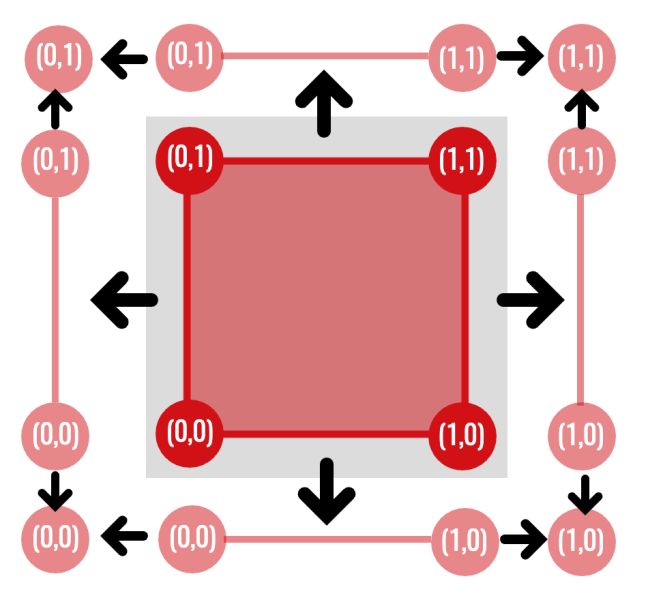
3 Cubical complexes
Definition 2 (Cubical complex) A cubical complex \(K\) is a finite collection of elementary cubes satisfying face closure:
\[ \kappa\in K\text{ and }\gamma\preceq\kappa \quad\Longrightarrow\quad \gamma\in K. \]
If a square belongs to the complex, all four edges and all four vertices must also belong. A subcomplex \(L\subseteq K\) is a subset that also satisfies face closure.
Definition 3 (Cubical map) Let \(K\) and \(L\) be cubical complexes. A map \(f\colon K\to L\) is cubical if it sends vertices to vertices and preserves face relations:
\[ \gamma\preceq\sigma \quad\Longrightarrow\quad f(\gamma)\preceq f(\sigma). \]
The inclusions in a filtration are the simplest cubical maps. More general maps may collapse a square onto an edge or an edge onto a vertex. This is why degenerate cubes remain useful even if the input image consists only of non-degenerate pixel squares: the domain cells have positive area, but their images under a structure-preserving map need not.
The later persistence chapters mainly use inclusion maps \(K_s\hookrightarrow K_t\): every cell already present at threshold \(s\) is also present at threshold \(t\). General cubical maps are introduced now so the advanced functoriality chapter has the correct language, but they need not be mastered before continuing.
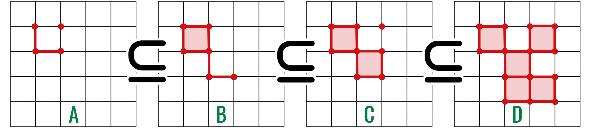
3.1 Images as cubical complexes
Treat each pixel as a closed \(2\)-cube rather than a dimensionless point. The ambient cubical complex contains those pixel squares and all their edges and vertices.
This model distinguishes a boundary from a filled region. Four edges forming a square enclose a \(1\)-dimensional hole; adding the \(2\)-cube fills that hole.
3.2 From pixel values to a cubical filtration
Recall that a filtration is a nested sequence of subcomplexes
\[ K_0\subseteq K_1\subseteq\cdots\subseteq K_m. \]
It represents one shape growing with a parameter. We now construct such a sequence from the image-level sets introduced in the previous chapter.
The previous chapter assigned an intensity only to each pixel coordinate. After identifying a pixel with a closed \(2\)-cube, we must also decide when its edges and vertices enter. Those lower-dimensional faces cannot appear later than the pixel, because every threshold stage must satisfy face closure.
Let \(\kappa_z\) be the closed pixel square associated with \(z\in\Omega\), and define the ambient cubical complex
\[ K(\Omega) = \{\gamma:\gamma\preceq\kappa_z \text{ for some }z\in\Omega\}. \]
Thus \(K(\Omega)\) contains every pixel square and all of their edges and vertices. Extend the image intensity from pixels to every cell \(\gamma\in K(\Omega)\) by
\[ \widehat I(\gamma) = \min\{I(z):\gamma\preceq\kappa_z\}. \]
For a pixel square, this returns that pixel’s own value. For a shared edge or vertex, it returns the smallest value among the incident pixels. This is the cubical lower-star convention used in the thesis (Wagner et al. 2012).
Proposition 1 (The minimum-coface extension is face-monotone) If \(\tau\preceq\sigma\) are cells of \(K(\Omega)\), then
\[ \widehat I(\tau)\leq\widehat I(\sigma). \]
Proof. Every pixel coface of \(\sigma\) is also a pixel coface of \(\tau\), because \(\tau\preceq\sigma\preceq\kappa_z\). Thus the set over which the minimum for \(\widehat I(\tau)\) is taken contains the set used for \(\widehat I(\sigma)\). A minimum over a larger set cannot be greater.
The inequality is exactly what face closure needs. For every threshold \(t\),
\[ K_t(I)=\{\gamma\in K(\Omega):\widehat I(\gamma)\leq t\} \]
is a cubical subcomplex. Moreover, \(s\leq t\) gives \(K_s(I)\subseteq K_t(I)\), so an 8-bit image produces the filtration
\[ \varnothing\subseteq K_0(I)\subseteq K_1(I) \subseteq\cdots\subseteq K_{255}(I)=K(\Omega). \]
The minimum may initially appear backwards: why should a shared edge inherit the darker incident value? Because when the first incident square enters, the edge must already be present as one of its faces. Choosing the minimum inserts the edge at exactly that earliest permissible threshold.
3.3 Dark and bright filtrations
The ordinary sublevel filtration prioritises low intensities. Dark structures such as vessels and haemorrhages therefore appear early. To prioritise bright structures, define the inverted image
\[ \widetilde I(z)=255-I(z) \]
and take its sublevel filtration. This is equivalent, after reversing the threshold parameter, to a superlevel filtration of \(I\). Bright exudates and the optic disc now appear early rather than late.
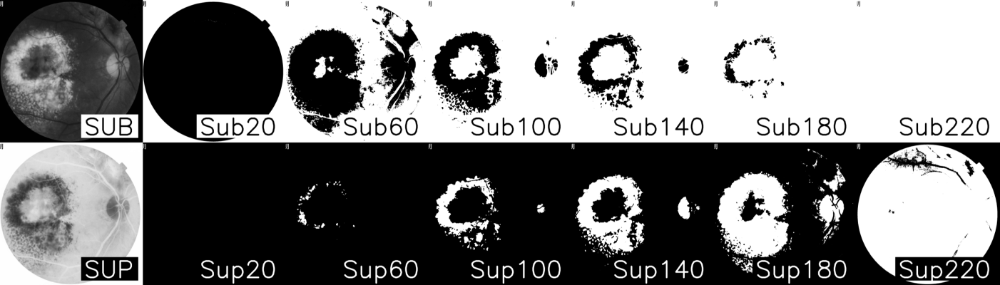
The two filtrations answer different questions. They should not be merged prematurely: a low-intensity component and a high-intensity component may have the same abstract topology but different physical interpretations.
4 Simplices
Why introduce a second family of building blocks? Cubes are tied to a grid, whereas a triangle can join any three suitably positioned vertices. Simplices therefore adapt more easily to meshes, point clouds, and irregular domains. The change of language broadens the theory; it does not invalidate the cubical model already built.
Points \(v_0,\ldots,v_k\in\mathbb R^n\) are affinely independent when the vectors
\[ v_1-v_0,\ldots,v_k-v_0 \]
are linearly independent.
Geometrically, affine independence prevents collapse: two distinct points span an edge, three non-collinear points span a triangle, and four non-coplanar points span a tetrahedron. The next chapter defines linear independence formally; this geometric reading is enough for the present construction.
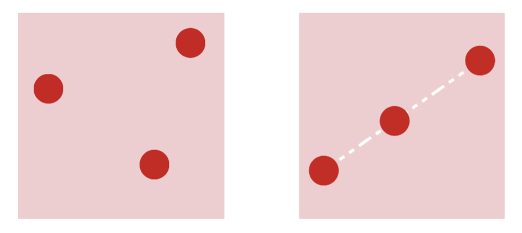
Their convex hull is a geometric \(k\)-simplex:
\[ [v_0,\ldots,v_k] = \left\{ \sum_{i=0}^k\lambda_i v_i: \lambda_i\geq0,\ \sum_{i=0}^k\lambda_i=1 \right\}. \]
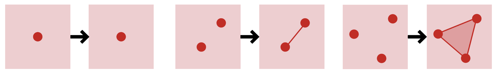
The first few simplices are:
| Dimension | Simplex |
|---|---|
| 0 | vertex |
| 1 | edge |
| 2 | triangle |
| 3 | tetrahedron |
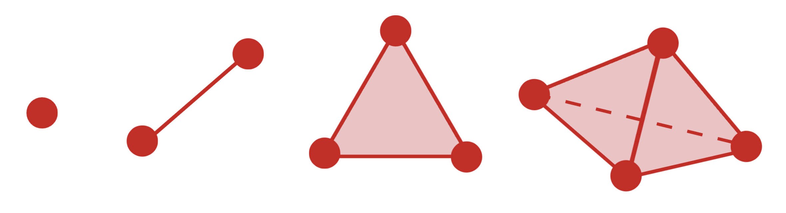
Every subset of the vertex set spans a face.
For example, the tetrahedron ([v_0,v_1,v_2,v_3]) contains four triangular facets, six edges, and four vertices. The dashed edge in the drawing is not absent; it is merely hidden behind the two visible faces.
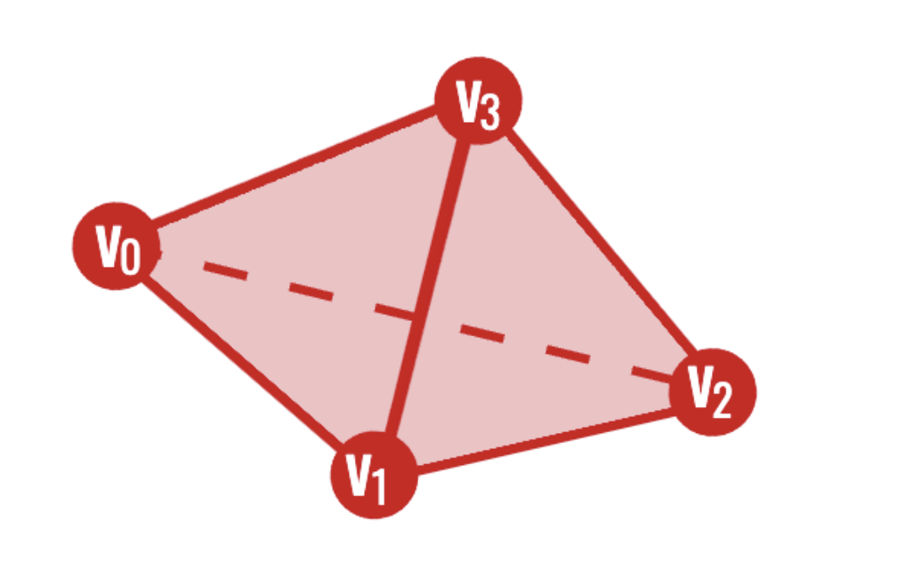
5 Abstract simplicial complexes
Definition 4 (Abstract simplicial complex) An abstract simplicial complex on a vertex set \(V\) is a collection \(K\) of finite subsets of \(V\) such that
\[ \sigma\in K,\ \tau\subseteq\sigma \quad\Longrightarrow\quad \tau\in K. \]
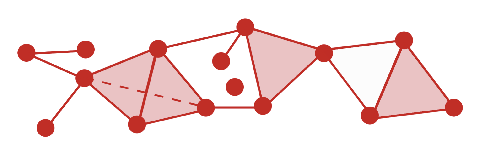
Again, the essential rule is face closure. The geometric realisation \(|K|\) turns the abstract combinatorial data into a topological space by realising each vertex set as a simplex and gluing common faces.
Abstract complexes are convenient for computation because a simplex can be stored simply as an ordered tuple of vertex identifiers.
A simplicial subcomplex is a subcollection that is itself closed under faces. Consequently, a filtration of simplicial complexes is not an arbitrary sequence of growing drawings: every intermediate drawing must still contain the faces of each simplex already present.
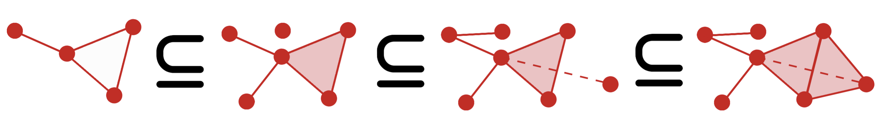
5.1 A deeper look: geometric realisation in coordinates
The next coordinate construction makes the phrase “glue the simplices along common faces” completely precise. If this is your first encounter with abstract simplicial complexes, you may instead retain the intuitive gluing description and continue to the cubical-versus-simplicial comparison.
The phrase “gluing simplices” can be made precise without requiring a particular drawing. Give each vertex \(v\in V\) a coordinate vector \(e_v\) in the vector space of finitely supported real functions on \(V\). Then
\[ |K| = \left\{ \sum_{v\in V}\lambda_v e_v: \lambda_v\geq0,\ \sum_v\lambda_v=1,\ \{v:\lambda_v>0\}\in K \right\}. \]
The coefficients \(\lambda_v\) are barycentric coordinates. Their positive support specifies the simplex containing the point. Two simplices meet exactly in the realisation of their common face, so this construction performs the required gluing automatically.
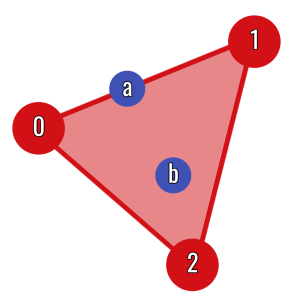
Definition 5 (Simplicial map) Let \(K\) and \(L\) be abstract simplicial complexes. A vertex map \(f\colon V(K)\to V(L)\) is simplicial if
\[ \sigma\in K \quad\Longrightarrow\quad f(\sigma)=\{f(v):v\in\sigma\}\in L. \]
Distinct vertices may have the same image, so a simplex is allowed to collapse to a lower-dimensional simplex.
A simplicial map extends affinely over each simplex:
\[ |f|\left(\sum_v\lambda_v e_v\right) =\sum_v\lambda_v e_{f(v)}. \]
The definition is consistent on shared faces because the same vertex map is used on every simplex.
6 Cubical or simplicial?
| Cubical complexes | Simplicial complexes |
|---|---|
| Natural for images and voxel data | Natural for point clouds and meshes |
| Preserve the original grid | Work in arbitrary combinatorial settings |
| A pixel is already a cell | Higher cells are assembled from vertices |
| Often fewer top-dimensional cells | Supported by broad general theory |
Neither representation is universally superior. The right choice is the one that respects the structure of the data.
7 Triangulating a cube
A cubical complex can be converted into a simplicial complex. In two dimensions, the Coxeter–Freudenthal–Kuhn construction splits every square along a consistent diagonal.
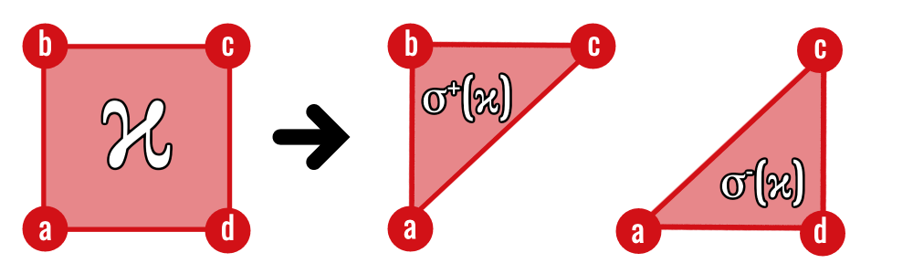
The two triangles meet along the new diagonal, while their outer edges are exactly the four edges of the original square. Applying the same diagonal convention consistently across a grid makes neighbouring squares agree on their shared faces.
After chains and boundaries have been introduced, this geometric observation becomes an algebraic statement: the shared diagonal cancels when the two triangle boundaries are combined, leaving the square’s outer boundary. The advanced chapter on functoriality and triangulation states and proves the resulting chain-map identity.
8 Filtrations of complexes
We have already constructed one particular filtration from pixel intensity. We now step back and isolate the general property shared by that construction and by filtrations on simplicial complexes.
More generally, a filtration is any nested sequence of subcomplexes
\[ K_0\subseteq K_1\subseteq\cdots\subseteq K_m. \]
Face closure must hold at every stage. For image data, a cell is assigned a filtration value no earlier than any of its faces. This guarantees that each \(K_t\) is a valid complex.
Proposition 2 (Face-monotone sublevel sets are subcomplexes) Let \(K\) be a cell complex and let \(f\colon K\to\mathbb R\) satisfy \(f(\tau)\leq f(\sigma)\) whenever \(\tau\) is a face of \(\sigma\). Then, for every \(t\in\mathbb R\),
\[ K_t=\{\sigma\in K:f(\sigma)\leq t\} \]
is a subcomplex of \(K\).
Proof. Take \(\sigma\in K_t\) and let \(\tau\) be any face of \(\sigma\). Face monotonicity gives \(f(\tau)\leq f(\sigma)\leq t\), so \(\tau\in K_t\). Hence \(K_t\) is closed under faces and is a subcomplex.
Filtrations change a static shape into an evolving one. Persistent homology will record when its features appear and disappear.
- Pixels are treated as filled squares, not merely as graph vertices.
- Face closure requires every cell to arrive with all of its faces.
- Cubical complexes fit image grids; simplicial complexes provide a more flexible general language.
- A filtration is a nested sequence of face-closed complexes.
The next chapter supplies the linear algebra used to turn these finite shapes into computable invariants.
9 Exercises
- List every face of the square \([0,1]^2\) by dimension.
- Explain why a collection containing a triangle but not its edges is not a simplicial complex.
- How many vertices does a \(k\)-simplex have?
- How many triangular \(2\)-simplices result from triangulating one square?
- Explain why adding a cell before one of its faces violates face closure.
Previous: Graphs and Digital Images · Course contents · Next: Linear Algebra for Homology